OVERVIEW
Four usability professionals conducted the remote moderated usability testing of on UserZoom Go website to evaluate and identify the usability issues on the Archivists Round Table (A.R.T) website. During testing sessions, I handled three usability testing sessions that took over a moderator two times and as a note-taker once. I composed the Methodology, Appendix, and References parts in our report.
I am also in charge of the art director. My works include designing the report, slides. Also, to deliver all the tables, charts, data visualization, illustrations, and graphics in our project.
To provide comprehensive solutions that improve the overall experience of the archivist website. I created mockups of their homepage, which presents the visual recommendation with high fidelity prototypes for mobile. And a video for the mobile device to give a further interpretation - how the Archivists Round Table website can execute both an aesthetic and functional way.
OBJECTIVE
Moderated remote test report
BACKGROUND
The Archivists Round Table of Metropolitan New York, Inc. (A.R.T.) is an online platform that provides humorous information such as archiving related events, publications, jobs for aspiring archivists, to networking.
Challenge
It is essential to hierarchize the navigation menu and to group each section on the homepage. The improvement can make sure users feel seamless experiences and have a positive first impression when browsing the site.
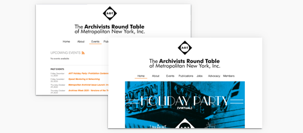
Problem Statement
The aspiring archivist needs an online platform to find archiving related events, publications, and information that share the same interests because they wish to get involved in New York archiving communities and access helpful resources.
EVALUATION PROCESS
The summary of the steps involved in a remote moderated usability test, as described from an article, Remote Moderated Usability Tests: How to Do Them, established by Nielsen Norman Group, is shown below:
Note: I handled three usability testing sessions that took over a moderator two times and as a note-taker once.
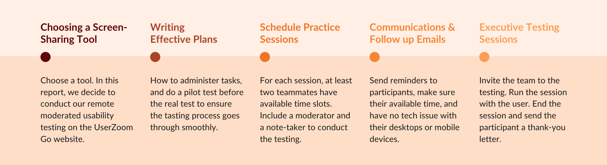What's the Research Question we address?
- What’s their users’ opinions and how do they feel when they come to this website?
- Could they find out the information they expect to get from this website?
What's Research Goal we achieve?
- We decided to do the Evaluative Research Method.
- To help us understand how our clients can iterate and redesign their website.
With this Research Goal in mind, we came up with 4 usability tasks...
What's Research Method we conduct?
We decided to conduct the usability testing method, which compared to in-person usability testing. The remote test has the advantage less expensive, less time-consuming. We also created the screening, pre, and post-test questionnaire to learn our participant's profile information. And during each session, every participant took 4 tasks as below:
The 1st task, we intended to get users' attitudinal data with semi-structured questions.
- First of all, we ask for their first impression of the website.
The 2nd, 3rd and 4th task are behavioral research which address our 2nd question.
- Then, participants need to find out an event in the 2nd task.
- Task 3, they have to find and contact a member on the ART Website.
- In the No.4 task, participants need to find available programs to progress their careers.
What did I learn from each step?
With the prepared usability testing plan, we executed the testing on the UserZoom Go website. But the method also has limitations, such as:
- The data is often not as rich compares to in-person testing.
- Also, the less engagement of participants.
- And the difficulty to control the process.
We did the protocol to ask our participants to decide which device they want to take usability testing. We prepared the script to follow for the testing, which makes sure our testing process went smoothly. After participants agreed to conduct the testing, we sent the email to sign the consent forms. Before the real testing, we also did the pilot test to rehearsal our usability testing.
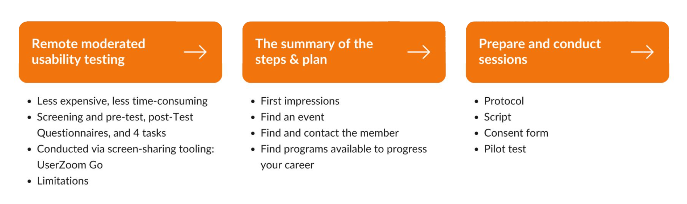From Client Kick-Off Meeting
Our clients are not familiar with the evaluation of usability testing. Still, they do want to improve the user experience of the A.R.T website. They noted a lot of information related to archiving on the homepage that is easy to confuse their users. And they also mentioned if we can provide mockups and prototypes to inspire and help them from a visual perspective.
From Pilot Testing
After the moderated remote testing plan, moderators scheduled the time to test the online testing tool. In this process, we make sure the facilitator and team are prepared and have no problem to run the testing. We found out the issues to fix in the pilot testing and make each task clear enough and not mislead participants. This step ensures our smoother test and more substantial results.
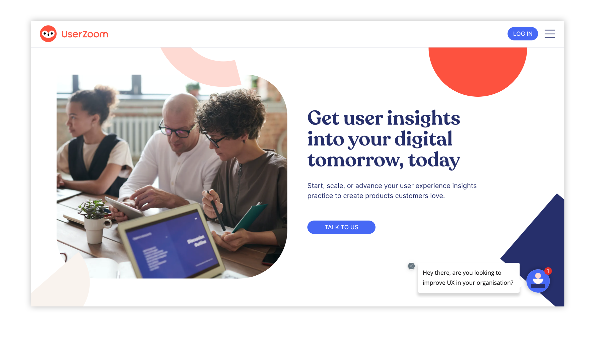
What did we learn from the participants?
Based on the client's feedback, they hope to develop their website further to serve their members and encourage new ones to join. The research team segmented these insights into three user profiles, archiving professionals, historian enthusiasts, and aspiring archivists. To figure out our participants and narrow down the research scope, we target the audience of Aspiring Archivists. 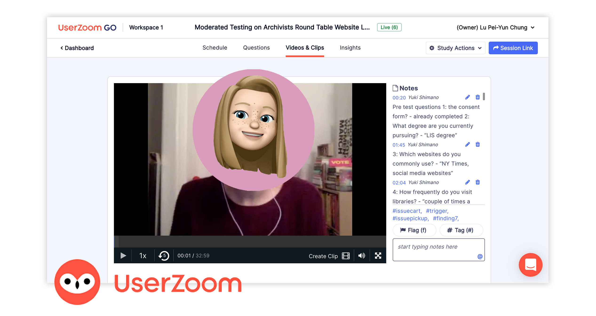
After usability testing, collecting participants' profile information from screening, pre-test, post-test questionnaire. We came out with the following summary of our user profile:
- Are they members of ART?
- Only one participant is a member of the ART website.
- What degree they currently pursuing?
- 6 users are major in Library and Information Science.
- 2 participants get a master's in Museum and Digital Culture degree.
- And one participant did the dual degree, History of Art and Design.
- What did they use for networking?
- There are many ways to do networking. The top 3 are LinkedIn, Facebook, and News website.
- 4 participants said they use LinkedIn for networking, 2 participants use Facebook.
- Used this site before?
- 4/9 participants are familiar with the A.R.T. website.
- How often they visited the library?
- 6/9 participants visit 1 to 3 times per week or month, including 3 per week and 3 per month.
Evaluation Results
After we got the feedback from our participants, we jumped into the Miro Board App. We noted down their profile information, pre & post-test questionnaire, and the input from four tasks. Followed the card sorting method to categorize each user. Then go to Google spreadsheets to group the usability findings, identify where they happen on the site, and rank their severity level. Finally, sort out grouping results with a pivot table, each issue's ground total scores, and percentage of severity.
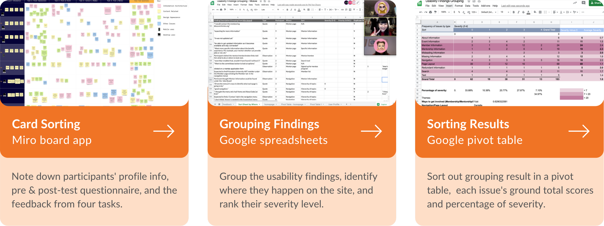Overall Results
From each evaluation task, we found out the Task 3 (to find and contact a member) has the most difficult ranked scores as 2.2. Task 4, "to find programs available to progress your career," is the easiest one, with average ranked scores of 3.8. (See the charts below for further detailed information)
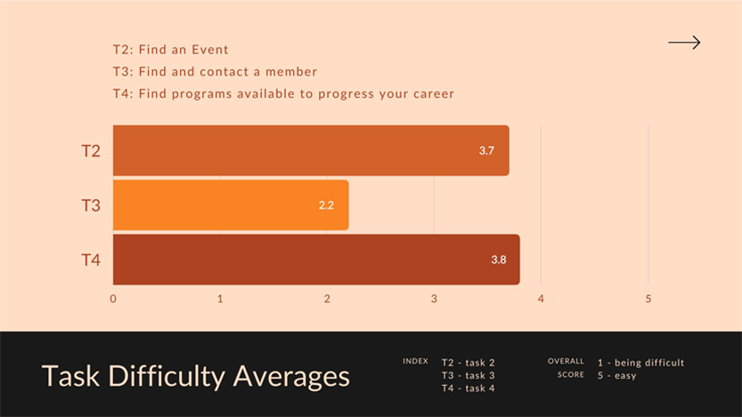And this bar chart visualizes the users’ behavioral data about the difficulty ranked scores in each task.
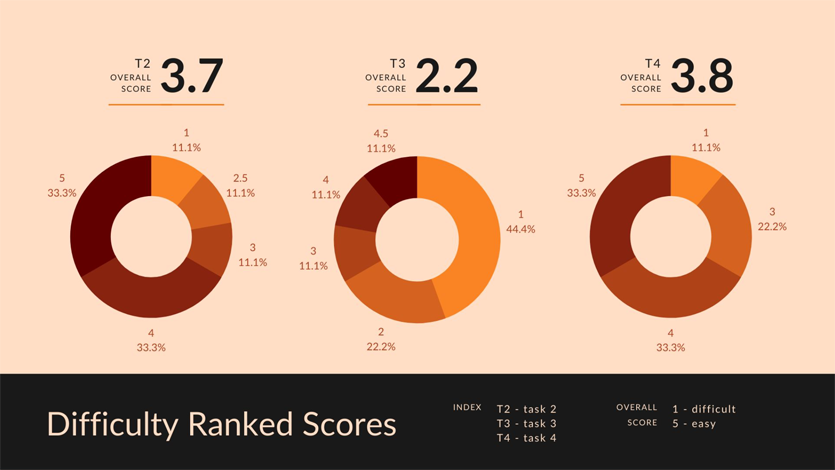How well did the product perform?
Based on the feedback of ther participants, I created the severity table in our report from our usability finding grouping. Approximately 35% of issues are severity recommended for priority. The attitudinal data from Task No.1 which addresses our first Research Question, we collected 39 opinions that participants mentioned about the websites’ layout and appearance. And 34% of cases are positive or neutral feedback. (The figure: Number of Issues by Severity & Severity Table in Summary)
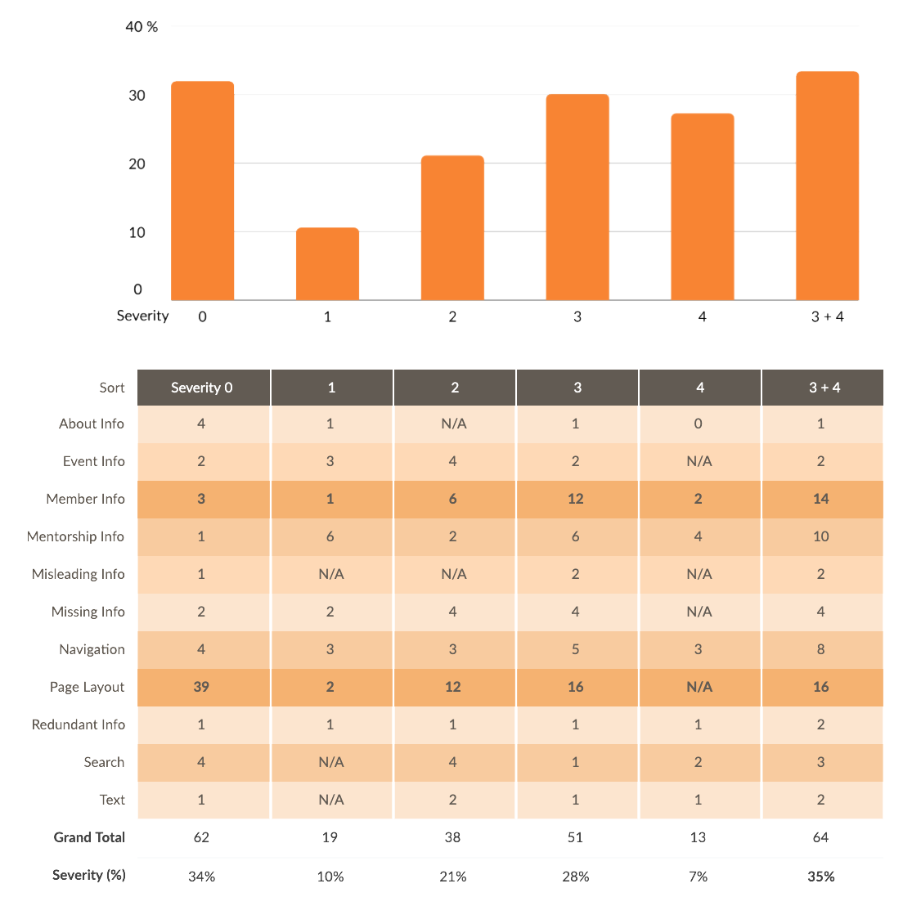EVALUATION LEARNING
My Key Findings
According to the severity table in our report, the grand total of page layout includes 64 issues mentioned by our participants during the usability testing. Although 39 issues identify as severity 0 as no problem or positive feedback, 16 issues are ranked as severity 3. And 4 participants reported they struggled with doing Task No.1 on the mobile devices. The layout problems did negatively impact users' experiences on the A.R.T. website.
Note: Based on the report, The Aesthetic-Usability Effect, established by Nielsen Norman Group, points out aesthetic usability effects could impact how users evaluate the usability problem. “People tend to believe that things that look better will work better — even if they aren’t actually more effective or efficient.”
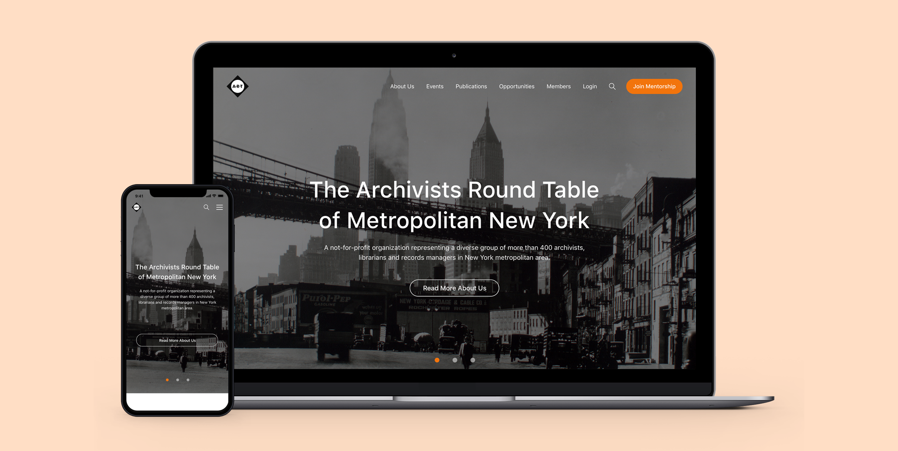My Recommendations
Therefore, I decided to address page layout issues with design principles and web content accessibility guidelines (WCAG). With the consistent elements and primary color from the current A.R.T website, I extracted the website's contents, redesign the information architecture. Click on the buttons to view the high-fidelity mockups and their rapid prototypes.
VIEW DESKTOP VIEW MOBILEWhat did I provide my point of view for recommended fixes?
Overall Layout
- Group and hierarchize the content - apply various color backgrounds, titles, and pictures to categorize each section.
- Scroll down the page, and the navigation menu fix on top.
Long Content
- Lean the content with a carousel - keep the latest news on the homepage. Provide CTA buttons to further check the detail pages.
Footer
- Chevron buttons - folded the detail pages to lean the content. Users click the button to unfold the menu of each section.
- Back to top button - provide a shortcut for users to jump back to top quickly without through the long content again.

Navigation Menu
- The first layer - prioritize the buttons: search icon and menu icon.
- The second layer - show all the options in one page that users don’t need to scroll down and know all the site map.
- Login button in text style - consider the avatar feature for login & logout status, which is better for the first development stage. Also, in our evaluation, only 1/9 participants are the A.R.T. member. Most users do not log in to accounts on their website when they visited.
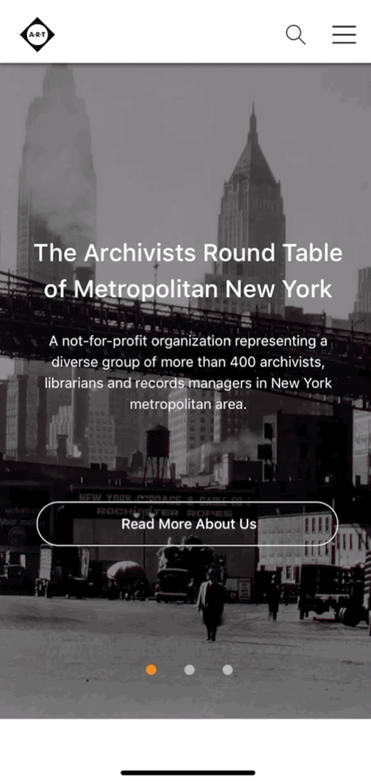
What did I deliver the design in this project?
Design of Report & Slides
I took over the art director in this report. My works include designing the 41-page report and 44-page slides. To make the visual identity and the branding of the A.R.T. website is consistent design in our paper layout and the final presentation.
Tables, Charts & Data Visualization
Also, to focus on the details and aesthetics. I decided to deliver all the tables, charts, data visualization, illustrations, and graphics in our project with the consistent design guideline.
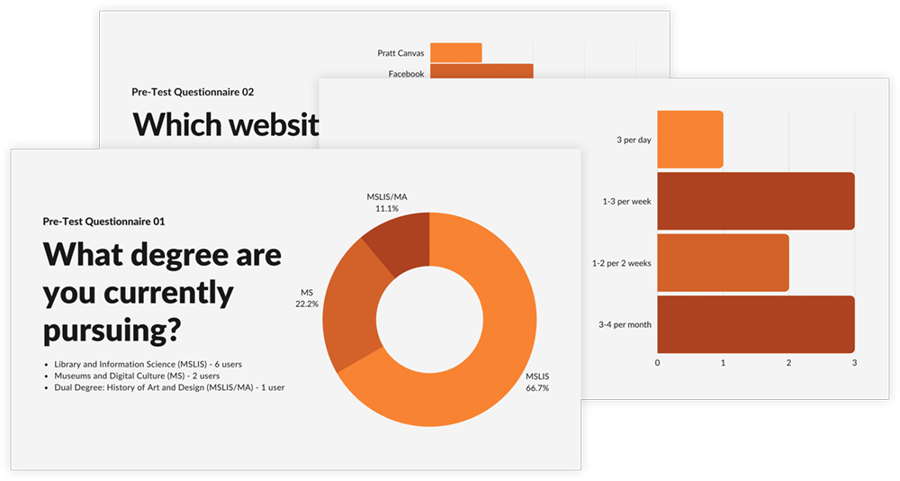
Illustrations, Graphics, Mockups & Prototypes
To provide comprehensive solutions that improve the overall experience of the archivist website. I created mockups of their homepage, which presents the visual recommendation with high fidelity prototypes for mobile.
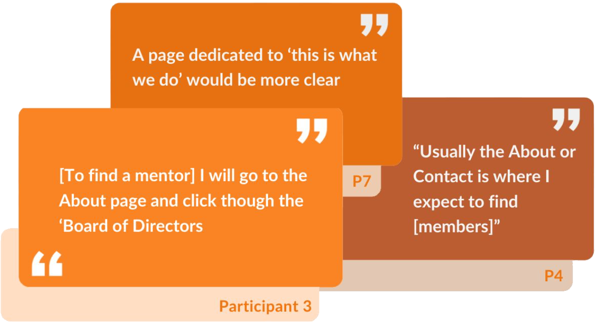
CONCLUSIONS
Summary
Based on our findings, the following four essential recommendations in this remote moderated report would improve the usability of the site:
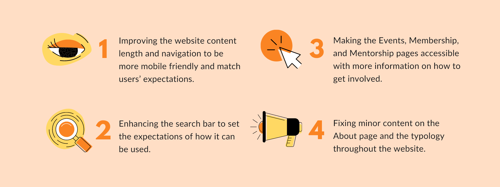Clients' Feedback
Our clients are delighted and satisfied with the evaluation results and prototypes. They mentioned both research and design are useful information for their improvement of the A.R.T. website.
Next Steps
With the high-fidelity prototypes, we can create a site map and do the tree testing on users. Then, design a navigation menu, plan the user flows regarding the A.R.T. website's child pages. To conduct usability testing and iterate the website design.
TAKEAWAYS
Although remote testing has pros that typically more cost-effective than in-person research, there are still a couple of limitations and cons. The qualitative data often not as rich as the in-person research. A remote test might also reduce the engagement and adherence of participants. Researchers might have difficulty controlling the process, such as when participants do not follow the instructions or guidelines. And it is less efficient when the moderators try to deal with the urgent technical issues.
What we can do next time to improve this process is to check tool or device limitations. To schedule technology-practice sessions before the real testing. Select a website or app that is completely unrelated to the testing website, and ask participants to use them.